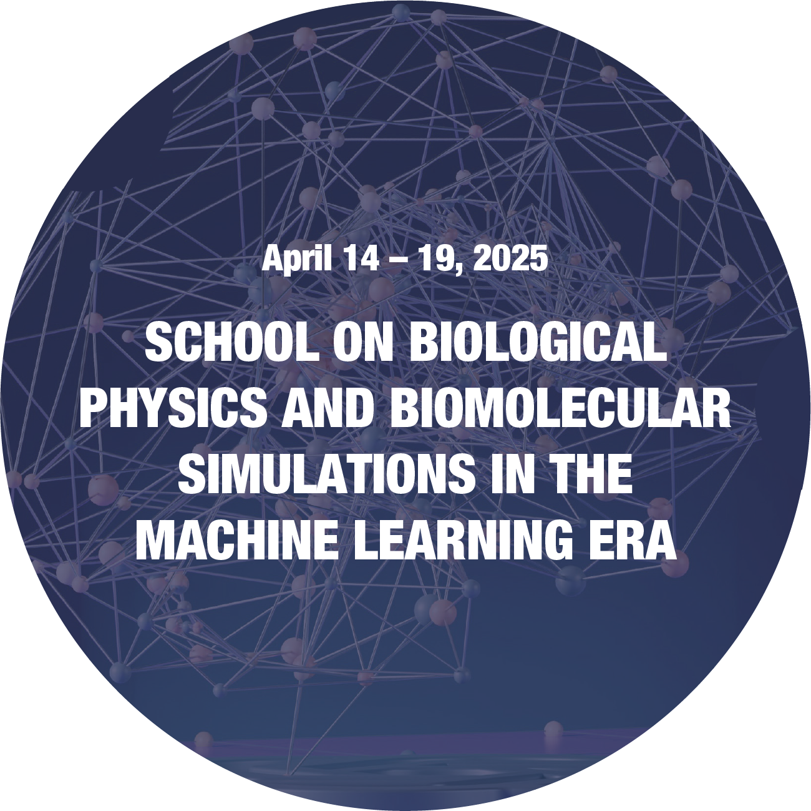

2026

XXIV Encuentro de Superficies y Materiales Nanoestructurados (Nano 2026)
Dinámica de transporte de gas en medios acuosos confinados: modelado y evaluación electroquímica de capas delgadas de ZIF-8
2025

XVII Jornadas de Tesistas del INIFTA
Adsorción de péptidos y proteínas en nanopartículas de sílica
Nanogeles termo-responsivos como plataformas para la absorción de doxorrubicina

VIII Encuentro Argentino de Materia Blanda (MAB VIII)
Exploring the role of nanoparticle size in protein adsorption onto silica surfaces
Role of Amino Acid Sequence in the Adsorption of Silica-Binding Peptides
Impact of Network Functionalization on the Surface Properties of Hydrogel Systems

School on Biological Physics and Biomolecular Simulations in the Machine Learning Era
Molecular Theory of protein adsorption on silica surfaces
★ Selected participant with full financial support (ICTP-SAIFR)

II Brazilian Workshop on Soft Matter
Modelling protein adsorption on silica nanoparticles by means of Molecular Theory
★ Selected participant with full financial support (ICTP-SAIFR)